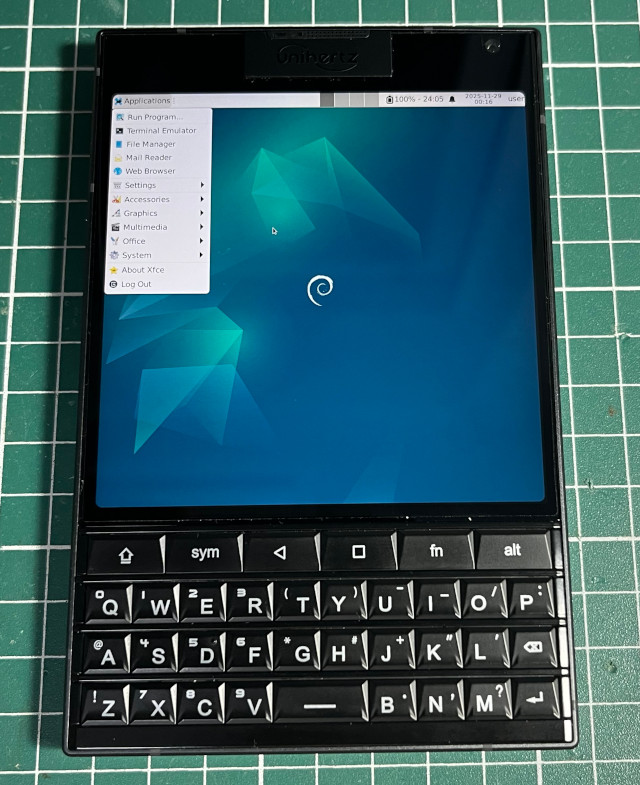

步驟如下：
1. 安裝Linux Deploy、XServer XSDL(自動旋轉)
2. Linux Deploy配置
Properties: linux BOOTSTRAP Distribution: Debian Architecture: arm64 Distribution: oldstable Source Path: http://ftp.debian.org/debian Installation type: Directory Installation path: /data/linux SSH Enable: Checked
3. 手動修復Linux Deploy的安裝問題
Titan_2:/ # mount --bind /dev /data/linux/dev
Titan_2:/ # mount --bind /dev/pts /data/linux/dev/pts
Titan_2:/ # mount --bind /sys /data/linux/sys
Titan_2:/ # mount --bind /proc /data/linux/proc
Titan_2:/ # chroot /data/linux
# export PATH=$PATH:/bin:/usr/bin:/usr/sbin
# bash
root@localhost:/# passwd root
root@localhost:/# apt --fix-broken install
root@localhost:/# mkdir -p /data/local/tmp/
root@localhost:/# apt-get update
root@localhost:/# apt-get install vim sudo openssh-server x11-xserver-utils
root@localhost:/# vim /etc/apt/sources.list
deb http://deb.debian.org/debian bookworm main contrib non-free non-free-firmware
deb http://deb.debian.org/debian bookworm-updates main contrib non-free non-free-firmware
deb http://deb.debian.org/debian bookworm-backports main contrib non-free non-free-firmware
deb http://archive.debian.org/debian/ buster contrib main non-free
root@localhost:/# apt-get update
root@localhost:/# apt-get install xfce4 xfce4-goodies dbus-x11
4. XServer XSDL配置：1436x1440、DPI x2
5. Termux
$ cd
$ vim ../usr/bin/cli
#!/system/bin/sh
if [ `whoami` != "root" ]; then
echo "run me as root"
exit
fi
/data/data/ru.meefik.linuxdeploy/files/bin/linuxdeploy -p linux start -m
ssh xxx@127.0.0.1
/data/data/ru.meefik.linuxdeploy/files/bin/linuxdeploy -p linux stop -u
$ chmod a+x ../usr/bin/cli
$ cli
xxx@localhost:~$
xxx@localhost:~$ DISPLAY=:0 startxfce4
完成
